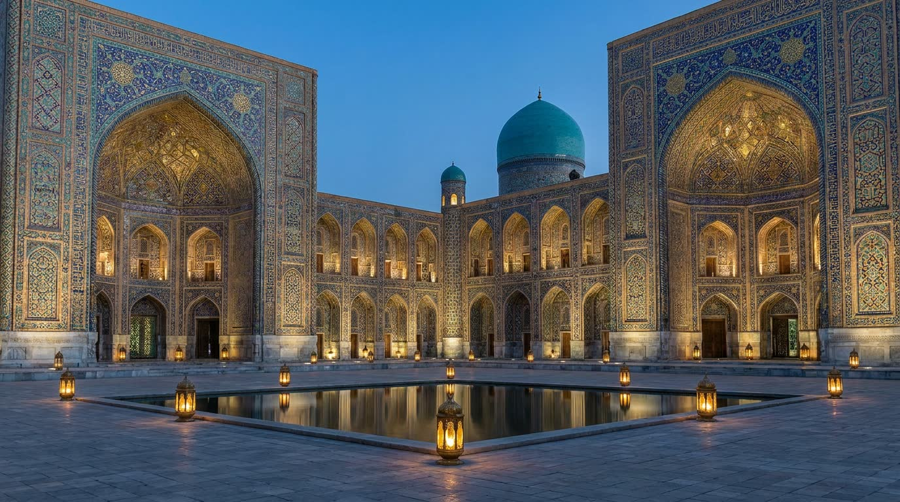

帖木儿与兀鲁伯的撒马尔罕
帖木儿为之从全国各地运来工匠的都城。

帖木儿把撒马尔罕定为都城，用从被征服城市驱赶来的工匠建造的建筑装点它。在他的时代建起了比比·哈内姆大清真寺（1399–1404）和他安葬于其中的古尔·埃米尔陵（始建于1403年）。
帖木儿的孙子、统治者兼天文学家兀鲁伯在列吉斯坦广场修建了经学院（1417–1420）和带巨型六分仪的天文台。他的星表是那个时代最精确的。
2001年，撒马尔罕以“撒马尔罕——文化的十字路口”之名列入联合国教科文组织世界遗产名录。我们的房间——大门、伊万、经学院、天文台——受这座城市启发，但它们是艺术性的再创作，而不是特定建筑的写照。